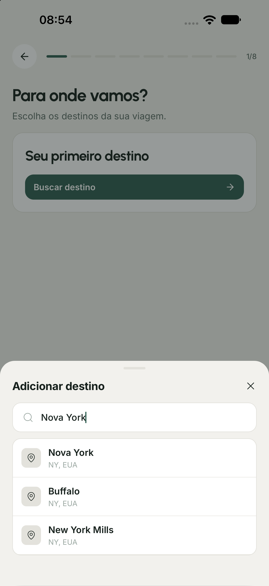
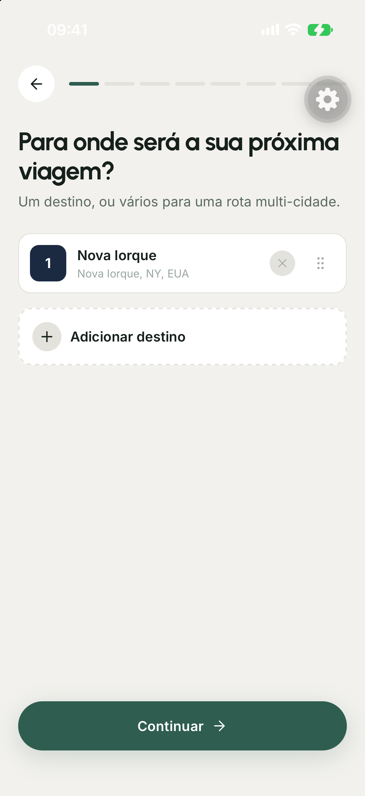
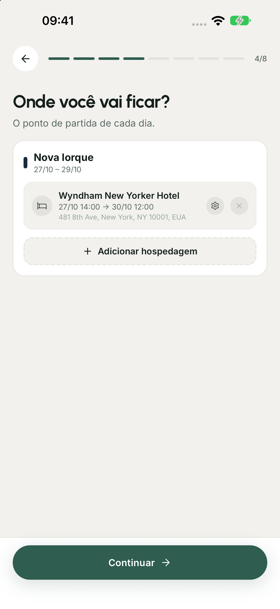
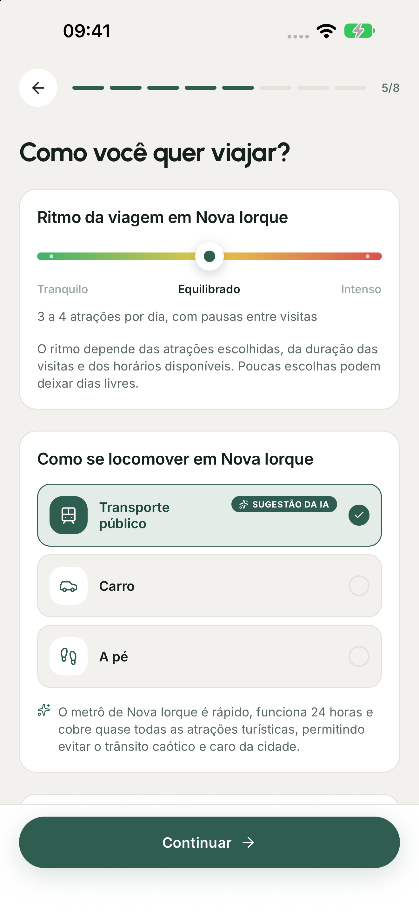
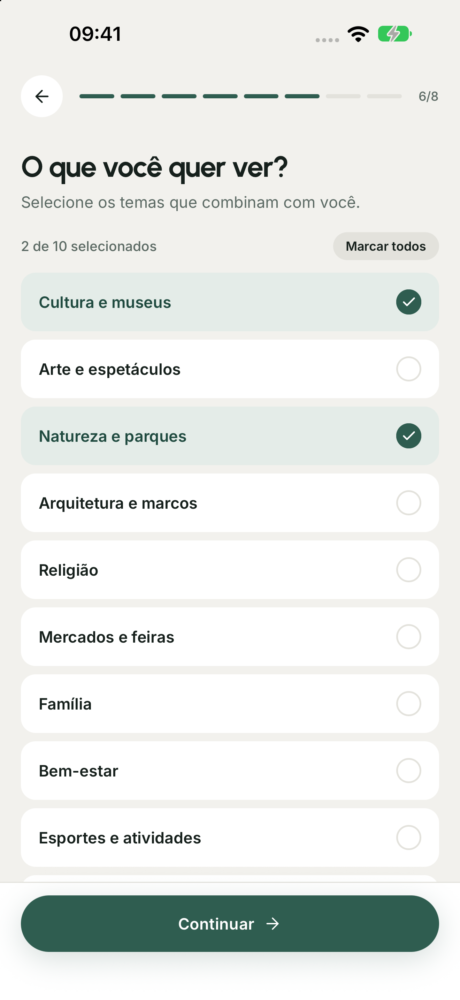

TSP
Traveling Salesman ProblemVisitar todos os lugares em uma única rota, com o menor custo.
Aplicativo móvel para geração de roteiros turísticos com otimização em grafos e modelos de linguagem
Olá. Nós somos Gustavo Takechi e Bruno Medeiros, e vamos apresentar o Interlude, um aplicativo móvel para planejar e editar roteiros turísticos.
A ideia surgiu quando planejamos uma viagem de três dias a Nova Iorque. Tínhamos vários lugares que queríamos conhecer, mas precisávamos descobrir o que cabia naquele período, considerando horários de funcionamento e deslocamentos. Cada mudança na lista exigia rever a agenda.
Foi dessa dificuldade que veio a proposta: reunir a pesquisa dos lugares e a organização das visitas em um aplicativo, mantendo as prioridades do viajante. Para mostrar como isso funciona, vamos acompanhar uma execução registrada de cinco dias em Nova Iorque, diferente da viagem que motivou o trabalho.
A viagem que motivou o projeto tinha três dias. O exemplo computacional da apresentação tem cinco dias. As duas situações são distintas.
Escolher o que visitar exige conciliar interesses, horários e deslocamentos no tempo disponível.
Quando planejamos uma viagem, não basta listar os lugares que queremos conhecer. Precisamos descobrir o que combina com nossos interesses, verificar os horários e calcular se as visitas cabem no período disponível, incluindo os deslocamentos.
Essa dificuldade, junto da nossa experiência com planejamento de viagens e no setor, orientou o escopo do Interlude. O viajante informa destino, datas, hospedagem, ritmo e transporte. Depois escolhe as atrações e coloca suas preferidas em ordem.
O aplicativo transforma essas escolhas em uma agenda diária que pode ser consultada no mapa, editada e salva. Se uma atração não couber, ela aparece como não alocada. O viajante continua decidindo o que visitar e, em viagens com várias cidades, também define a ordem dos destinos.
No exemplo à direita, partimos de doze atrações e uma hospedagem em Nova Iorque. A animação mostra essas mesmas visitas distribuídas em cinco dias. A questão central do projeto é fazer essa passagem das preferências para uma agenda utilizável.
Os mapas usam as coordenadas das atrações selecionadas. A divisão em dias é a resposta registrada do solver.
Os lugares formam os nós do grafo, os deslocamentos ligam esses nós. Cada modelo acrescenta uma decisão à agenda.
Visitar todos os lugares em uma única rota, com o menor custo.
Distribuir as visitas entre várias rotas, no app, cada rota é um dia.
Respeitar horários, somando visitas, deslocamentos e esperas.
Selecionar as visitas de maior valor que cabem nos dias e horários.
Combinar deslocamentos, exclusões e preferências em um custo a minimizar no OR-Tools.
Linhas: rotas, arcos âmbar: horários permitidos, pontos tracejados: visitas excluídas.
O fundamento do projeto é um problema de roteamento. Representamos cada lugar como um nó de um grafo e cada deslocamento como uma ligação com custo. Só que uma boa agenda precisa decidir mais coisas do que o menor caminho entre dois pontos.
O TSP, ou Traveling Salesman Problem, procura uma rota de menor custo que visite todos os pontos e retorne ao início. Ele resolve a ordem das visitas, mas considera apenas uma rota.
O VRP distribui as visitas entre várias rotas. No nosso caso, usamos essa ideia para representar os dias da viagem: cada dia tem uma rota que sai da hospedagem e retorna a ela. O VRPTW acrescenta as janelas de tempo. Uma visita só pode acontecer em um horário compatível com o funcionamento do local, considerando sua duração e o deslocamento até a próxima parada.
Mesmo assim, talvez não caiba visitar tudo. O TOPTW combina várias rotas, horários e seleção de pontos pelo valor que oferecem. Os pontos tracejados representam visitas que ficaram de fora. Esse é o fundamento mais próximo do nosso problema turístico: escolher o que cabe e em que dia visitar.
No último quadro está a adaptação implementada no Interlude. Usamos o roteamento do OR-Tools com visitas opcionais e um custo que combina deslocamentos, penalidades por excluir atrações e desvios das preferências. Excluir uma atração prioritária pesa mais. Assim, o sistema tenta preservar as escolhas mais importantes enquanto respeita as restrições recebidas.
Essa adaptação se aproxima do TOPTW, mas não é uma reprodução literal da sua função objetivo clássica. O TOPTW costuma maximizar o valor das visitas, o nosso modelo minimiza um custo ponderado. Essa distinção explica por que precisamos olhar tanto a viabilidade da agenda quanto a composição desse custo.
A sequência de modelos organiza a explicação das decisões, sem representar uma cronologia. A função objetivo implementada difere da formulação clássica do TOPTW.
As setas tracejadas representam dependências e apontam de quem utiliza para o serviço utilizado. A ponta aberta não representa herança nem uma resposta de rede. Por exemplo, o backend depende do solver, e o solver não depende do backend.
O aplicativo foi desenvolvido com Expo e React Native. Ele envia as solicitações ao backend em TypeScript, usando HTTPS e o token de autenticação do usuário.
O backend coordena a geração. Consulta lugares no Google Places, obtém tempos de deslocamento no Routes e usa o Gemini para as estimativas e sugestões previstas no fluxo. As respostas elegíveis são consultadas primeiro no Redis, para evitar novas chamadas quando há dados disponíveis.
Com esses dados, o backend monta uma instância e a envia ao solver em Python. O solver usa o OR-Tools para organizar as visitas e devolve os dias, os horários e os pontos que não foram alocados.
O Firebase cuida da autenticação e da persistência. O backend utiliza o Admin SDK, o aplicativo também acessa o Firestore pelo SDK cliente, sujeito às regras de segurança. A arquitetura separa a interface, a coordenação dos serviços e a resolução do problema de roteamento.
O Redis pode ser contornado em caso de falha: o adaptador consulta a origem. O solver não consulta provedores externos, recebe os dados preparados pelo backend.
Aqui mostramos o que é guardado quando uma viagem é salva. O elemento central é o TripDraft, que representa a viagem e fica em um documento do Firestore, no caminho trips seguido do identificador da viagem.
Dentro desse registro ficam os destinos, o roteiro gerado e o progresso das visitas. O roteiro contém uma lista de dias. Cada dia contém as paradas, com a ordem e os horários de chegada e saída, além dos deslocamentos entre elas. Por exemplo: para recuperar a hora de uma visita, seguimos a viagem, o roteiro, o dia e a parada.
O losango preenchido indica composição e fica junto do objeto que contém os dados. Por exemplo, a viagem contém os destinos, o roteiro e o progresso. O roteiro contém os dias, e cada dia contém paradas e deslocamentos. A multiplicidade zero a um indica um campo opcional, enquanto zero a muitos indica uma lista. A associação com seta aberta aponta da viagem para o perfil do proprietário pelo campo ownerId. Não há composição nessa ligação, porque o perfil existe em um documento separado e pode ser associado a várias viagens.
É um diagrama de classes UML para os tipos persistidos em documentos, e não um esquema relacional. Losango preenchido significa composição, losango vazio significaria agregação e triângulo vazio indicaria generalização. Esses dois últimos símbolos não são usados porque essas relações não estão sendo representadas. Os recortes omitem campos. TripDraft é salvo em trips/{id}. legs, itinerary e liveProgress são campos desse documento. itinerary contém days, cada dia contém steps e legs de deslocamento. ownerId relaciona a viagem ao proprietário. O cache de respostas externas é separado dos dados da viagem.

Agora vamos percorrer o que o viajante faz no aplicativo antes de receber as sugestões de atrações. A primeira ação é tocar em Criar uma nova viagem, na tela inicial.
Em seguida, ele busca a cidade. Neste exemplo, digitamos Nova York e selecionamos o resultado correspondente. A busca identifica o destino que será usado nas consultas seguintes.
Ao digitar a cidade, o aplicativo chama o endpoint de autocomplete. A resposta traz sugestões e seus identificadores. O botão de criar a viagem inicia o rascunho local.
Os blocos são recortes dos contratos HTTP, não uma captura de tráfego de rede. Os valores apresentados vêm das telas e da entrada do exemplo. Campos e itens foram omitidos para leitura. Capturas reais do aplicativo. As escolhas são mantidas no rascunho da viagem e enviadas às próximas etapas da geração.


O destino selecionado aparece nesta lista. É possível acrescentar outras cidades e definir a ordem em que serão visitadas. Essa ordem é uma escolha do viajante.
Na próxima tela, o calendário registra o período de cada destino. O exemplo usa de quatorze a dezoito de setembro, totalizando cinco dias. No modelo, cada um desses dias será representado por uma rota.
Com os destinos e as datas confirmados, o aplicativo pode relacionar a hospedagem e as preferências ao período correto da viagem.
Depois da seleção, uma chamada de detalhes com purpose igual a location recupera a localização e a área do destino. As datas ficam no rascunho, sem uma requisição HTTP específica nessa tela.
Os blocos são recortes dos contratos HTTP, não uma captura de tráfego de rede. Os valores apresentados vêm das telas e da entrada do exemplo. Campos e itens foram omitidos para leitura. Capturas reais do aplicativo. As escolhas são mantidas no rascunho da viagem e enviadas às próximas etapas da geração.



Primeiro, informamos a hospedagem e os horários de entrada e saída. A hospedagem será a base das rotas. No exemplo, usamos o Wyndham New Yorker, as visitas do primeiro dia são disponibilizadas a partir das quatorze horas.
Depois, escolhemos o ritmo e o transporte. O perfil equilibrado define um teto de quatro atrações por dia neste modelo. O transporte público, sugerido pelo aplicativo e aceito pelo viajante, define os tempos da matriz de deslocamentos.
Por fim, selecionamos os interesses, como cultura, museus e parques. Essas categorias orientam a busca por atrações. Todas essas escolhas ficam no rascunho da viagem e seguem para a etapa de descoberta, que vamos detalhar agora.
A hospedagem é pesquisada pelo endpoint text-search, que recebe o texto e a região de busca. A recomendação de transporte é outra chamada, que recebe o nome da cidade e retorna o modo e o motivo. Ritmo e interesses são escolhas locais.
Os blocos são recortes dos contratos HTTP, não uma captura de tráfego de rede. Os valores apresentados vêm das telas e da entrada do exemplo. Campos e itens foram omitidos para leitura. Capturas reais do aplicativo. As escolhas são mantidas no rascunho da viagem e enviadas às próximas etapas da geração.

{ "location": { "latitude": 40.7527316,
"longitude": -73.9936287 },
"buckets": [{ "id": "nature",
"types": ["park"] }] }{ "buckets": [{ "id": "nature",
"places": [{ "name": "Central Park",
"rating": 4.8,
"userRatingCount": 301915,
"primaryType": "park" }] }] }{ "places": [{
"name": "Central Park",
"rating": 4.8
}], "includePhotos": true }{ "places": [{
"insight": { "averageMinutes": 120 },
"place": { "name": "Central Park" }
}] }Recortes dos contratos. A descoberta real envia todas as categorias ativas. O enriquecimento acrescenta estimativas e fotos.
Preservar atrações compatíveis com os interesses e remover estabelecimentos sem relação com a visita.
Com a viagem definida, o aplicativo busca lugares associados aos interesses escolhidos. O retorno inclui nome, posição, nota, quantidade de avaliações e tipos do lugar. O Central Park é um exemplo desse retorno.
Antes de ordenar as sugestões, aplicamos um filtro. Um resultado marcado como atração turística pode ser uma loja, um hotel ou outro estabelecimento que não corresponde ao passeio procurado. O filtro considera os tipos do lugar, os interesses explícitos e as exceções de atrações reconhecidas.
O resultado é uma lista de candidatos para o viajante examinar. A nota e o número de avaliações ajudam a ordenar essa lista, mas ainda precisamos tratar a diferença entre um lugar pouco avaliado e outro com milhares de avaliações.
À direita estão os dois endpoints envolvidos. Discover retorna os candidatos separados por categoria. Enrich acrescenta a estimativa de duração e a foto. Os blocos mostram apenas os campos relevantes dos contratos.
O filtro considera tipos primários e secundários, interesses explícitos e exceções. A variante TCC apresenta os oito primeiros candidatos pelo escore global e depois intercala as categorias ativas com peso igual.
O escore combina a nota ajustada pelo volume de avaliações, a popularidade relativa e um desconto por distância.
Aproxima notas com poucas avaliações da referência 4,0. Com muitas avaliações, preserva a nota observada.
Usa o volume de avaliações como indicador de popularidade, em uma escala de 0 a 1 entre os candidatos.
Até o raio R, não há desconto no escore. Fora dele, cada duplicação da distância reduz o escore em 0,15.
Um lugar com nota cinco e uma única avaliação não oferece a mesma evidência que um lugar com nota quatro vírgula oito e milhares de avaliações. Por isso, o primeiro termo ajusta a nota usando uma média de referência. Quando há poucas avaliações, o valor fica mais próximo dessa referência, quando há muitas, fica próximo da nota observada.
É o que acontece no exemplo à direita: a nota cinco do lugar hipotético se aproxima de quatro, enquanto a do Central Park continua perto de quatro vírgula oito.
Depois acrescentamos um termo de popularidade baseado no volume de avaliações, comprimido por logaritmo. Por fim, descontamos a distância: dentro do raio de busca não há desconto, fora dele, cada duplicação da distância reduz o escore em zero vírgula quinze.
Esses pesos foram ajustados de forma exploratória. O próximo gráfico mostra como os critérios alteram a ordem das mesmas atrações.
O índice i identifica uma atração. Leia Bᵢ como “bê índice i”, os demais índices seguem a mesma regra. O logaritmo comprime diferenças grandes no número de avaliações.
Leia: “esse índice i é igual a bê índice i, mais zero vírgula seis vezes i maiúsculo índice i, menos zero vírgula quinze vezes gê índice i”. É a nota ajustada, acrescida da popularidade e descontada pela distância.
Leia: “n índice i vezes erre índice i, mais quinhentos vezes quatro, tudo dividido por n índice i mais quinhentos”. nᵢ é a quantidade de avaliações e rᵢ é a nota observada. Os 500 funcionam como peso da nota de referência 4,0. Com nᵢ = 1 e rᵢ = 5, o resultado é 2005/501 ≈ 4,002, com muitas avaliações, o ajuste é pequeno.
Leia uᵢ: “logaritmo na base dez de um mais n índice i”. Leia Iᵢ: “u índice i menos u mínimo, dividido por u máximo menos u mínimo”. Os extremos são os valores entre os candidatos. Isso leva a popularidade para a faixa de zero a um, se os extremos forem iguais, o código usa zero e evita divisão por zero.
Leia: “logaritmo na base dois do maior valor entre um e d índice i dividido por erre”. dᵢ é a distância até a referência da busca, R é o raio. Se dᵢ ≤ R, Gᵢ = 0. Em 2R, Gᵢ = 1, então o escore perde 0,15, em 4R, perde 0,30.
A média de referência é 4,0, com peso de 500 avaliações. A popularidade relativa usa logaritmo e normalização entre os candidatos, se os extremos forem iguais, Iᵢ = 0. Os pesos 0,6 e 0,15 são ajustes exploratórios, sem estudo que os estabeleça como ideais.
As mesmas doze atrações em três ordenações. Em destaque, quem mudou de posição.
Aqui mantivemos as mesmas doze atrações e comparamos três critérios. Na primeira coluna, multiplicamos nota pelo número de avaliações. Como as notas são muito próximas, o volume de avaliações praticamente determina a ordem.
Na coluna do meio usamos a média bayesiana. Como estes lugares já têm muitas avaliações, os resultados ficam muito próximos de quatro vírgula sete ou quatro vírgula oito. O ajuste é mais relevante para os candidatos com poucas avaliações, que não estão nesta seleção final.
Na última coluna, acrescentamos a popularidade relativa. O Metropolitan sobe da sétima para a quarta posição, enquanto o Empire State cai da quarta para a sétima. As cores destacam a mudança entre a primeira e a última coluna.
Neste conjunto, todas as atrações estão dentro do raio de busca, então o desconto por distância é zero. Essa comparação explica o comportamento da ordenação, a decisão final sobre quais lugares visitar continua com o viajante.
O produto simples é nota vezes número de avaliações. A média bayesiana e o escore completo usam as fórmulas do slide anterior. Neste conjunto, todas as atrações estão dentro do raio, então o termo de distância vale zero. Posição no gráfico é uma ordenação, não o valor do escore.
O produto simples é uma referência de comparação. O desconto por distância é zero nas doze atrações exibidas. Azul indica subida, âmbar indica descida e cinza indica a mesma posição entre a primeira e a última coluna.


A ordenação atualiza o rascunho local antes do envio para geração.
Depois de examinar as sugestões, o viajante escolhe as atrações e arrasta a lista para indicar suas prioridades. Aqui foram selecionadas doze.
Estar em primeiro nessa lista significa que aquele lugar é mais importante para a pessoa. Isso aumenta o custo de deixá-lo de fora se faltar tempo. A lista não obriga o roteiro a visitar os pontos nessa mesma sequência: os horários e os deslocamentos ainda precisam ser respeitados.
Dessa forma, conseguimos separar duas decisões. O usuário diz o que prefere preservar, e o solver procura em que dia e em que ordem encaixar cada visita. A fórmula seguinte mostra como essa preferência entra no cálculo.
Leia: “um mais quatro vezes rô índice i”. ρᵢ = (N − ordem)/N: “ene menos a ordem, dividido por ene”. N é a quantidade de atrações e a ordem começa em zero. Com 12 atrações, a primeira recebe fator 5, a última recebe 1 + 4/12, aproximadamente 1,33. O fator aumenta o custo de exclusão, sem fixar a sequência das visitas.
A prioridade altera o custo de exclusão. Ela não fixa a ordem cronológica das visitas nem garante a inclusão de uma atração quando suas janelas são incompatíveis.
Excluir uma atração acrescenta uma penalidade ao objetivo. O valor combina a prioridade do viajante, a popularidade e a época da viagem.
5.000.000Valor alto para favorecer a inclusão. Atrações continuam opcionais, sujeitas às janelas e ao custo total.
ρ = (N − ordem)/NO fator vai de 5 no primeiro a 1 + 4/N no último.
ι = mín(1, log₁₀(1+n)/5)Fator entre 1 e 1,5. Pode inverter custos entre posições próximas, não é apenas desempate.
σ ∈ {0,6 ou 1}Com σ = 0,6 o fator é 0,8: redução de 20%. Nesta execução, σ = 1 para todas.
Esta é a penalidade cobrada quando uma atração fica de fora. Ela faz parte da função de custo do solver, não representa um preço pago pelo usuário.
Partimos de cinco milhões e ajustamos esse valor pela posição na lista, pela popularidade do lugar e pela adequação à época da viagem. A posição tem a maior amplitude de peso. A popularidade também influencia e pode inverter o custo entre atrações próximas na lista.
Neste exemplo, todas as atrações têm adequação sazonal igual a um. Portanto, esse fator não muda a comparação. Atividades de dia inteiro recebem um custo de exclusão próprio, mais elevado.
Nos cinco dias de Nova Iorque, as doze atrações couberam. O efeito dessa penalidade aparece quando falta tempo: o solver compara o custo de excluir cada lugar com os demais custos da agenda, sempre respeitando as restrições obrigatórias.
Leia: “pi índice i é a parte inteira de cinco milhões, vezes um mais quatro rô índice i, vezes um mais meio iota índice i, vezes meio mais meio sigma índice i”. Os colchetes com piso ⌊ ⌋ mandam arredondar para baixo. πᵢ é um custo do objetivo, sem unidade monetária.
Leia: “rô índice i é ene menos a ordem, dividido por ene”. N é o total de atrações, ordem começa em zero. O primeiro fator vai de 5 até 1 + 4/N. Quanto mais alta a prioridade do viajante, mais caro excluir.
Leia: “iota índice i é o menor valor entre um e o logaritmo na base dez de um mais ene, dividido por cinco”. n é a quantidade de avaliações. ιᵢ fica entre zero e um e produz fator entre 1 e 1,5. Aqui há uma escala fixa, não é a normalização relativa da descoberta.
Leia: “sigma índice i pertence ao conjunto zero vírgula seis e um”. O fator 0,5 + 0,5σᵢ vale 0,8 quando σᵢ = 0,6 e vale 1 quando σᵢ = 1. Assim, uma atração menos adequada à época custa 20% menos para excluir. Nesta entrada, todas usam 1.
Para a primeira atração, com ρ = 1, ι = 1 e σ = 1: 5.000.000 × 5 × 1,5 × 1 = 37.500.000 unidades. Atrações de dia inteiro usam regra própria: penalidade fixa de dois bilhões.
A posição usa ρ = (N − ordem)/N, com ordem começando em zero. A importância turística da exclusão usa escala fixa, diferente da normalização entre candidatos da descoberta. Atividades de dia inteiro recebem penalidade fixa de dois bilhões. A resposta original de cinco dias tem unassigned vazio.
Horários de funcionamento e durações definem quando visitar, a matriz informa o tempo para chegar ao próximo lugar.
Último início às 13h45 para terminar até 17h.
O backend transforma as informações da viagem em uma entrada numérica para o solver. Dois exemplos ajudam a entender essa transformação.
À esquerda, o Metropolitan funciona das dez às dezessete horas nesse dia, e a duração estimada da visita é de três horas e quinze minutos. Portanto, a visita pode começar entre dez horas e treze e quarenta e cinco. A última faixa mostra esse encaixe: começando às treze e quarenta e cinco, a visita termina às dezessete.
À direita está um recorte da matriz de deslocamentos por transporte público. A linha indica de onde saímos, e a coluna indica para onde vamos. Do hotel ao Metropolitan, por exemplo, são cerca de trinta e dois minutos. No sentido contrário, são vinte e oito. Por isso, a matriz considera cada direção separadamente.
O solver combina esses tempos com a duração das visitas e as janelas disponíveis para decidir uma sequência viável. A matriz completa e as demais atrações continuam na entrada, aqui mostramos apenas quatro lugares para facilitar a leitura.
O fim da janela de início é o fechamento menos a duração da visita: 17h − 3h15 = 13h45. Leia “dezessete horas menos três horas e quinze minutos, igual a treze e quarenta e cinco”. A última faixa mostra o caminho inverso: 13h45 + 3h15 = 17h. Na tabela, cruze a linha da origem com a coluna do destino, o número é o tempo em minutos, arredondado. A ida pode ter duração diferente da volta. As treze posições distintas da entrada completa geram 13 × 13 = 169 pares origem–destino.
Há três grupos de treze alternativas de almoço, nos dias 2, 3 e 4, nas mesmas coordenadas da hospedagem e das atrações. A matriz de treze posições é expandida no payload de cinquenta e dois nós. A base continua disponível antes das 14:00 no primeiro dia.
O modelo escolhe quais paradas visitar, em que dia e em qual sequência. Cada dia corresponde a um veículo no OR-Tools.
Teto rígido no ritmo moderado. Piso suave de 2, cobrado só em dias com visita.
Com os dados preparados, o modelo precisa decidir quais paradas visitar, em que dia e em qual sequência. Cada dia é representado por um veículo que sai de uma base e retorna a uma base.
Na notação, x indica um deslocamento usado, z indica que o ponto foi visitado naquele dia, y indica que ele ficou de fora e T registra o horário de início. A primeira condição diz que um ponto opcional é visitado uma vez ou excluído. A seguinte liga a visita à entrada e à saída daquele ponto na rota.
O teto de quatro atrações por dia é obrigatório neste ritmo. Já o mínimo de duas é uma preferência com penalidade, aplicada aos dias que têm visitas.
Por fim, minimizamos a soma dos deslocamentos e das penalidades. Isso permite escolher entre agendas que respeitam as restrições. O valor do objetivo compara essas soluções, mas não mede diretamente a satisfação do viajante.
d identifica o dia, i e j identificam pontos. D é o conjunto dos dias, U reúne os pontos opcionais, incluindo refeições, Vₐ é o subconjunto das atrações. o_d e f_d são as bases de saída e retorno. ∈ lê-se “pertence”, ⊆, “é subconjunto”, ∑, “somatório”. Os símbolos sobrescritos d indicam dia, não potência.
xᵈᵢⱼ lê-se “xis de i para j no dia d”: vale 1 se aquele deslocamento é usado. zᵈᵢ lê-se “zê do ponto i no dia d”: vale 1 se há visita. yᵢ lê-se “ípsilon índice i”: vale 1 se o ponto é excluído. {0,1} indica variável binária. Tᵈᵢ lê-se “tê do ponto i no dia d”: início do atendimento, em segundos desde as 06h. T ≥ 0 lê-se “tê maior ou igual a zero”.
Leia: “a soma de zê do ponto i sobre todos os dias, mais ípsilon índice i, é igual a um”. Para cada ponto opcional, ou uma visita ocorre em um dia ou ele é excluído. Isso impede visitar o mesmo ponto em dois dias.
Leia: “a soma dos arcos que entram em i é igual à soma dos arcos que saem de i, e ambas são iguais a zê do ponto i naquele dia”. Se o ponto é visitado, há uma entrada e uma saída, se não é, ambas são zero. A expressão resume a conservação de fluxo.
Leia: “a soma das atrações visitadas no dia d é menor ou igual a quatro”. É um limite rígido para o ritmo moderado deste exemplo. Refeições não são atrações e não entram nessa contagem. O mínimo de duas atrações é suave, cobrado apenas em dias com visita.
Leia: “minimizar a soma dos tempos dos deslocamentos utilizados, mais a soma das penalidades das atrações excluídas, mais fi”. tᵢⱼ é o tempo entre i e j, x seleciona os deslocamentos. πᵢ é a penalidade de excluir i, y seleciona exclusões. Φ, letra grega fi, reúne os demais custos: duração do dia, limites suaves, preferências de horário e refeições omitidas. O valor total é uma pontuação de custo, não dinheiro nem uma duração pura.
O teto usa SetMax. O piso usa SetCumulVarSoftLowerBound com custo de vinte milhões por visita faltante, sem cobrança em rotas vazias. As bases de saída e retorno têm índices distintos no modelo, mesmo quando representam a mesma hospedagem.
A próxima visita começa depois que a anterior termina e o deslocamento é concluído. Exemplo: Catedral de São Patrício → Metropolitan, no dia 2.
O fechamento semanal retira aquele dia das opções de visita da atração.
Iniciar após a faixa recomendada custa 500 unidades/s na preferência forte e 20 na suave. Antecipação não gera penalidade.
61.200 s por dia nesta execução, com origem às 06:00. A chegada 28.800 s equivale a 14:00.
O relógio é propagado ao longo da rota. A próxima visita só pode começar depois que a anterior terminar e depois de concluído o deslocamento.
No exemplo do segundo dia, a visita à Catedral de São Patrício dura trinta minutos. Somamos o transporte até o Metropolitan. Se chegarmos antes da janela de atendimento do museu, precisamos esperar. É por isso que a desigualdade permite que o próximo início seja maior que a soma, e não exige igualdade.
Além desse encadeamento, cada atração tem dias permitidos e horários de início. As preferências acrescentam um custo quando a visita começa depois da faixa recomendada, mas não proíbem esse atraso.
Os horários do cálculo usam seis da manhã como origem. Assim, vinte e oito mil e oitocentos segundos correspondem a catorze horas. Essa conversão será a mesma usada para exibir a agenda no aplicativo.
Leia: “se o arco de i para j é usado no dia d, então o início em j é maior ou igual ao início em i, mais a duração da visita em i, mais o deslocamento de i para j”. A seta ⇒ lê-se “implica”. Os T da figura se referem ao mesmo dia, por isso o sobrescrito d foi omitido. sᵢ é o tempo de serviço, ou visita, tᵢⱼ é o deslocamento.
A igualdade bastaria se a visita seguinte pudesse começar assim que a pessoa chega. O sinal ≥ admite espera, por exemplo até a abertura do museu. O modelo não permite iniciar a visita seguinte antes de terminar a anterior e o transporte.
Todos os valores numéricos estão em segundos desde as 06h. Some o início na Catedral, os 1.800 segundos de visita e o transporte. Se a soma for menor que 14.400 segundos, o Metropolitan ainda exige espera até as 10h. A diferença entre 14.400 e essa soma é a espera mostrada no gráfico.
61.200 segundos equivalem a 17 horas: das 06h às 23h. 28.800 segundos equivalem a 8 horas após as 06h, portanto 14h. A preferência de horário é suave: atraso após o fim da faixa custa 500 ou 20 unidades por segundo conforme a força. Ela é diferente da janela obrigatória de funcionamento.
O tempo de trânsito soma serviço e deslocamento. A espera é permitida pela dimensão de tempo. O atraso na preferência custa 500 unidades por segundo quando forte e 20 quando suave, não há custo simétrico por antecipação.
Parallel Cheapest Insertion constrói a agenda inicial, Guided Local Search (GLS) busca alternativas de menor custo.
solution = self._solve_with_strategy(
routing,
routing_enums_pb2.FirstSolutionStrategy
.PARALLEL_CHEAPEST_INSERTION,
primary_time_limit,
)
# Dentro de _solve_with_strategy:
params.first_solution_strategy = strategy
params.local_search_metaheuristic = (
routing_enums_pb2.LocalSearchMetaheuristic
.GUIDED_LOCAL_SEARCH
)
return routing.SolveWithParameters(params){
"total_distance_meters": 62379,
"days": [
{
"day_index": 0,
"distance_meters": 15736,
"total_time_seconds": 31937
}
],
"unassigned": []
}Um dos cinco dias, unassigned: [] significa nenhuma atração excluída.
Limite desta busca: 5 segundos. Retorna a melhor solução encontrada, sem prova de ótimo.
Com as restrições montadas, precisamos encontrar uma combinação viável e tentar reduzir o seu custo. A configuração tem duas decisões diferentes, destacadas aqui: como construir a primeira solução e como melhorá-la depois.
Para a primeira solução, usamos Parallel Cheapest Insertion, ou inserção mais barata em paralelo. A ideia é avaliar onde uma parada pode entrar entre duas outras, comparando as posições e as rotas disponíveis. O algoritmo favorece a inserção que acrescenta menos custo de percurso e respeita as restrições. Como cada rota representa um dia, ele constrói a distribuição das visitas entre os dias. O termo paralelo aqui se refere à construção das rotas, e não significa que configuramos várias threads de execução.
Em seguida entra a Guided Local Search, a busca local guiada. A busca local considera mudanças, como trocar a ordem de visitas e movê-las entre dias. O problema é que uma solução pode chegar a um mínimo local: nenhuma pequena mudança considerada melhora imediatamente o custo, embora possa existir uma combinação melhor mais adiante.
A GLS usa penalidades internas para mudar o que a busca passa a favorecer e conseguir explorar além desse mínimo local. Essas penalidades pertencem ao mecanismo de busca. Elas são diferentes da penalidade de excluir uma atração, que representa a preferência do viajante na função objetivo.
O código à esquerda mostra onde escolhemos a inserção mais barata e onde ativamos a GLS antes de chamar o solver. À direita, estão alguns campos da resposta real: a distância total, os dados do primeiro dia e a lista de atrações não alocadas. Essa lista está vazia, porque as doze atrações foram incluídas. A resposta completa tem os cinco dias e a sequência de paradas com horários.
A busca tem um limite adaptado ao tamanho da entrada. Neste caso, são cinquenta e dois nós e cinco dias, o que leva a cinco segundos de busca. Ao terminar, devolvemos a melhor solução encontrada nesse prazo, sem afirmar que seja a ótima. A próxima animação mostra como o objetivo diminui durante uma nova execução com a mesma entrada.
Para inserir k entre i e j, compare o custo dos novos trechos i → k e k → j com o trecho i → j que será substituído. O custo de inserção se baseia nos custos dos arcos. Restrições de horários e de capacidade de cada dia limitam os encaixes possíveis. A heurística constrói uma primeira solução, isso não garante a melhor combinação global.
Um mínimo local é uma solução para a qual os movimentos da vizinhança considerados não produzem melhora imediata. A GLS modifica a avaliação interna por penalidades, permitindo explorar outras regiões da busca. Distinguir esse mecanismo das penalidades de exclusão do modelo: a primeira orienta a exploração, a segunda expressa o custo de omitir visitas.
Leia PARALLEL_CHEAPEST_INSERTION como “inserção mais barata em paralelo” e GUIDED_LOCAL_SEARCH como “busca local guiada”. FirstSolutionStrategy escolhe a construção inicial, LocalSearchMetaheuristic escolhe a busca posterior. O primeiro trecho chama _solve_with_strategy, o segundo recorta esse método, omitindo a criação de params e a linha de configuração do prazo. SolveWithParameters executa a busca com esses parâmetros.
O JSON é uma projeção de campos reais da resposta, com apenas o primeiro objeto de days e sem steps. day_index começa em zero: 0 é o primeiro dia. total_distance_meters = 62379 significa 62,379 km em toda a viagem, distance_meters = 15736 significa 15,736 km no primeiro dia. total_time_seconds = 31937 equivale a 8 h 52 min 17 s nesse dia. unassigned: [] significa lista vazia de atrações não alocadas. Não é uma entrada completa nem uma resposta completa.
Leia “quantidade de nós mais duas vezes a quantidade de dias”. As barras indicam cardinalidade: número de elementos. Aqui V inclui 52 nós, inclusive alternativas de almoço, e D contém 5 dias. Logo, 52 + 2 × 5 = 62, na faixa de 5 segundos. Até 30, o limite é 2 s, de 31 a 70, 5 s, acima de 70, 15 s. É uma regra prática da implementação, não uma medida formal de complexidade.
Os trechos preservam os identificadores do solver e omitem linhas intermediárias. O prazo restante da requisição pode reduzir o limite escolhido. Se a busca principal não encontrar solução, a tentativa alternativa usa AUTOMATIC por até 30 segundos, condicionada ao prazo restante.
Cada quadro mostra uma melhoria real da agenda. O gráfico distingue o instante da última melhora do limite configurado da busca.
Última melhora: 0,4679 sLimite da busca: 5 sTempo só do solver. A geração no app também consulta APIs e prepara os dados.
Esta animação foi produzida com uma nova execução do solver usando a mesma entrada de Nova Iorque. Cada quadro corresponde a uma melhoria da melhor solução completa encontrada até aquele momento.
O número identifica a atração e a cor indica o dia. Conforme a ordem e a distribuição das visitas mudam, o custo diminui. No registro, ele passa de aproximadamente quarenta e um milhões para cento e cinquenta e quatro mil unidades.
As refeições continuam participando do cálculo, mas foram ocultadas no mapa para facilitar a leitura das atrações. A reprodução foi desacelerada para permitir acompanhar as mudanças. O relógio mostra o instante real do registro, e não o tempo de reprodução da animação.
No eixo horizontal está o tempo da busca do solver em segundos. No vertical está o custo da melhor solução encontrada, e menor é melhor. Os dois eixos são logarítmicos, para permitir enxergar valores muito diferentes. Por isso, distâncias iguais no eixo representam multiplicações, e não somas. Os valores menores que um segundo indicam instantes de melhoria, e não a duração total da busca. A última melhora ocorreu em zero vírgula quatro seis sete nove segundo. A busca continua até o limite configurado de cinco segundos sem melhorar esse resultado. Esse tempo cobre apenas o solver. A geração completa no celular também envolve consultas às APIs e preparação dos dados.
São 41 melhorias registradas em uma nova execução local. O objetivo passa de 41.494.118 para 154.192. A animação omite os nós de refeição e não mostra todos os candidatos avaliados ou rejeitados. A proveniência e os resumos SHA-256 estão no JSON do registro.
Escala logarítmica significa que 0,01 → 0,1 → 1 s ocupa intervalos iguais, pois cada passo multiplica por dez. No eixo vertical, 100 mil → 1 milhão → 10 milhões segue a mesma lógica. A linha horizontal após a última melhora representa o mesmo melhor custo até o limite configurado de busca. O arquivo registra as melhorias e não armazena o instante exato de retorno. Por isso, 5 s é o limite configurado, e não uma medição exata de duração desta execução.
12 de 12 atrações incluídas, 62,4 km de deslocamento no total
Nova Iorque, 14 a 18 de setembroComo ler: os números ligam cada ponto à visita na lista e indicam sua ordem no dia. Hospedagem. Linhas ligam as paradas, os trajetos reais seguem a malha de transporte.
Este é o roteiro devolvido para os cinco dias de Nova Iorque. As doze atrações foram incluídas, com sessenta e dois vírgula quatro quilômetros de deslocamento no total.
Cada coluna reúne o mapa e a agenda de um dia. Os números indicam a sequência das visitas naquele dia, e a lista abaixo traz o nome e o horário de cada uma. O quadrado marca a hospedagem. Os mapas usam a mesma escala, e as linhas mostram a ordem entre as paradas, não o desenho exato do transporte.
No segundo dia, por exemplo, a Catedral de São Patrício vem antes do Metropolitan e do Central Park, com uma pausa de almoço entre o museu e o parque. Já o terceiro dia concentra o maior deslocamento, por incluir a Estátua da Liberdade.
A resposta alimenta a agenda e o mapa do aplicativo e pode ser salva e editada. Há uma limitação visível no primeiro dia: a saída do hotel ocorre antes da chegada informada. Portanto, incluir todas as atrações não basta para garantir que a agenda inteira esteja correta.
Os horários, as distâncias e a sequência são os da resposta original de cinco dias. Cada mapa usa a mesma projeção e escala. A numeração recomeça em cada dia e representa a ordem de visita, não a prioridade. A saída da hospedagem antes da chegada informada é uma limitação conhecida da entrada e da implementação.
Mesma entrada: 12 atrações em 5 dias. O custo do objetivo combina deslocamentos e penalidades, menor é melhor.
| Solução inicial | Busca local | Parada / limite | Custo do objetivo | Atrações |
|---|---|---|---|---|
PATH_CHEAPEST_ARC | — | Primeira solução | 96.495.574 | 10 / 12 |
PARALLEL_CHEAPEST_ | — | Primeira solução | 41.494.118 | 12 / 12 |
GREEDY_DESCENT | Até parar | 155.336 | 12 / 12 | |
GUIDED_LOCAL_SEARCH | 2 a 600 s | 154.192 | 12 / 12 | |
SIMULATED_ANNEALING | 60 s | 155.336 | 12 / 12 | |
TABU_SEARCH | 60 s | 155.336 | 12 / 12 |
GLS: menor custo observado com todas as atrações. Ampliar o prazo de 2 para 600 segundos manteve o mesmo resultado nessa entrada.
Comparamos as estratégias mantendo a mesma entrada: atrações, horários, matrizes e pesos. As duas primeiras colunas separam a construção da solução inicial da busca local que tenta melhorá-la. Os nomes em inglês são as configurações usadas no OR-Tools.
A coluna de custo é o valor da função objetivo. Ela combina deslocamentos e penalidades, não é uma distância em metros nem uma duração total. Quanto menor, melhor segundo os pesos do modelo. A última coluna informa quantas das doze atrações foram incluídas.
O Path Cheapest Arc produz uma primeira solução com dez atrações. O Parallel Cheapest Insertion já inclui as doze, mas ainda tem um custo alto. Continuar com a busca local reduz muito esse valor, mesmo sem aumentar a quantidade de visitas.
A Guided Local Search encontrou o menor custo observado: cento e cinquenta e quatro mil cento e noventa e dois. O resultado se manteve nos limites de dois a seiscentos segundos. As outras buscas locais ficaram em cento e cinquenta e cinco mil trezentos e trinta e seis. Isso vale para esta entrada e não demonstra que encontramos o ótimo global.
A GLS foi comparada com limites de 2, 5, 15, 60, 300 e 600 segundos. Os três menores tiveram três repetições. O registro reúne 17 execuções com cinco dias e quatro recortes. A reprodução confirmou objetivos e agendas, os tempos citados pertencem ao registro original. Não há limite inferior comprovado para calcular distância ao ótimo.
Testes automatizados e verificações no aplicativo, repetidos após a integração e a publicação.
A avaliação com participantes acrescentou situações reais de uso e revelou falhas na agenda.
A validação acompanhou a consolidação do aplicativo e continuou depois da integração e da publicação. Os cenários controlados do solver e as execuções em algumas cidades fazem parte desse processo, mas não representam todas as verificações realizadas.
Na parte automatizada, verificamos as regras do solver e executamos as suítes do backend e do aplicativo. O fechamento de publicação também incluiu a checagem de tipos, o lint e a compilação dos componentes. Isso ajuda a detectar regressões antes de distribuir uma nova versão.
Também verificamos os fluxos no aplicativo instalado: gerar o roteiro, consultar a agenda, alternar os mapas em duas e três dimensões e explorar os dias e as conexões do grafo. Conferimos a instalação da versão distribuída, o login, a reabertura offline e a recuperação das viagens pelo Firestore após a reinstalação.
As rodadas posteriores incluíram a colaboração. Conferimos as permissões de editor e visualizador, o registro de despesas e a remoção do acesso ao sair de uma viagem. Também verificamos a preservação das viagens na exclusão de uma conta, a conclusão do roteiro em Memórias e o compartilhamento por imagem e vídeo.
Essas verificações mostram o funcionamento dos fluxos nas condições exercitadas. A avaliação com participantes, que vem a seguir, acrescentou situações de uso e encontrou problemas que as verificações anteriores não tinham eliminado.
O registro de validações inclui oito testes do solver em cinco cenários, 15 testes do backend e 24 do mobile no fechamento de publicação, além de TypeScript, ESLint e builds. Esses números são registros de etapas específicas, e não uma contagem de todas as validações do projeto. O README também documenta verificações posteriores de mapas, grafo, colaboração, ciclo de vida da viagem e compartilhamento. Não foi realizado ensaio sob carga.
Seis participantes, cada um com seu aparelho e cenário, executaram cinco casos de teste e responderam a um formulário próprio.
| P1 | P2 | P3 | P4 | P5 | P6 | |
|---|---|---|---|---|---|---|
| Q1 Foi fácil informar destino, período, hospedagem e preferências | 4 | 3 | 5 | 5 | 4 | 4 |
| Q2 As informações das atrações bastaram para decidir | 4 | 4 | 3 | 4 | 4 | 2 |
| Q3 Entendi como a prioridade influencia o roteiro | 5 | 2 | 4 | 5 | 4 | 4 |
| Q4 O tempo de espera pela geração foi aceitável | 5 | 4 | 5 | 5 | 4 | 4 |
| Q5 A agenda parece realizável | 3 | 4 | 3 | 4 | 4 | 3 |
| Q6 Entendi por que atrações ficaram de fora | – | – | – | 5 | – | – |
| Q7 Foi fácil ajustar o roteiro depois de gerado | 4 | 2 | 4 | 5 | 3 | 3 |
| Q8 Confio nas durações e nos horários | 3 | 4 | 2 | 3 | 4 | 3 |
| Q9 Usaria o Interlude numa próxima viagem | 4 | 3 | 3 | 5 | 4 | 3 |
Traço: não se aplica (nenhuma atração ficou de fora).
Seis participantes usaram o aplicativo em seus aparelhos e realizaram cinco casos de teste cada um. Foram trinta casos no total: dezesseis atenderam à expectativa, nove foram concluídos com ressalva e cinco não atenderam.
Todos conseguiram gerar e consultar um roteiro, mas apareceram dificuldades concretas. A reserva de almoço informada para doze e meia foi agendada às treze e cinquenta e seis. Na priorização, um participante precisou de ajuda para descobrir que era necessário arrastar os itens. Também houve saída da hospedagem antes da chegada informada.
Na tabela, cada coluna corresponde a um participante. Na afirmação sobre a espera pela geração, todas as notas foram quatro ou cinco. Já a confiança nas durações e nos horários recebeu notas entre dois e quatro. Isso orienta a atenção para a confiabilidade da agenda, além da velocidade.
Esses dados descrevem seis percursos de uso, com tarefas diferentes. Eles ajudam a identificar correções, mas não permitem generalizar a experiência para todos os viajantes.
O formulário contém nove afirmações de 1 a 5 e quatro perguntas abertas. A análise técnica de apoio reproduz os cenários com as regras do backend e uma matriz aproximada. Q4 registra percepção de espera, sem medir a latência. No cenário de São Paulo, forçar uma visita no dia vazio elevou o objetivo de 78.302 para 570.516.
Quatro cenários para a mesma viagem: 5 dias, 12 atrações e 1 hospedagem. US$ por geração, apenas APIs.
Novas consultas:
lugares, matriz, IA e fotos.
Novas consultas:
lugares, matriz e fotos.
Novas consultas:
apenas as 13 fotos.
Nenhuma chamada
às APIs consideradas.
Tarifas de setembro de 2026, valores arredondados, antes de franquias, impostos e infraestrutura. Estimativa de consumo, não uma fatura. Reutilização sujeita às condições dos provedores.
Para dimensionar o custo, calculamos um cenário de cinco dias, com doze atrações e uma hospedagem. Usando as tarifas de setembro de dois mil e vinte e seis, a primeira geração, sem reaproveitamento de dados, fica em aproximadamente um dólar e trinta e oito centavos em APIs.
A maior parcela é a matriz de deslocamentos. São treze posições distintas, e precisamos considerar cada origem com cada destino: cento e sessenta e nove pares. Essa parcela custa cerca de oitenta e cinco centavos, ou sessenta e um vírgula quatro por cento do total.
Nos cenários B, C e D, comparamos o que acontece quando parte das respostas já está armazenada. Reaproveitar apenas as estimativas da IA reduz o total para um dólar e vinte e oito. Reaproveitar os dados de planejamento e a matriz deixa nove centavos de novas fotos. Sem novas consultas nem fotos, a parcela dessas APIs é zero.
Zero aqui não significa que operar o aplicativo seja gratuito: a execução e a persistência continuam existindo. Estes são cálculos de consumo com quantidades declaradas, antes de franquias, impostos e infraestrutura. Além disso, o reaproveitamento de conteúdo Google depende das condições de armazenamento do provedor.
Todos os valores são dólares dos Estados Unidos por geração, apenas APIs. O total exato do cenário é US$ 1,37730, exibido como US$ 1,38. As parcelas exatas são: matriz 0,84500, buscas e detalhes 0,34230, modelo de linguagem 0,09900, fotos 0,09100. Os valores na tela foram arredondados para centavos.
Leia 13 × 13 = 169 como “treze origens vezes treze destinos, igual a cento e sessenta e nove pares”. Cada elemento custa US$ 0,005 na tarifa adotada, 169 × 0,005 = 0,845. A participação é 0,845 ÷ 1,37730 × 100 ≈ 61,4%. As coordenadas repetidas das refeições não aumentam as treze posições.
Somente IA: 1,37730 − 0,09900 = US$ 1,27830. Dados e matriz, com fotos novas: US$ 0,09100. Sem novas chamadas: US$ 0,00000 em APIs consideradas, mas a execução do solver e a infraestrutura continuam existindo. São hipóteses de consumo declaradas na monografia, não valores medidos em fatura. A política de reutilização Google precisa atender às condições do provedor.
Premissas: 10 chamadas de autocomplete, 2 detalhes Pro, 6 buscas próximas Enterprise, 2 buscas textuais Enterprise, 13 fotos, matriz de 169 elementos, 12 mil tokens de entrada e 9 mil de saída no Gemini 3.5 Flash Standard. Os cenários exibidos custam US$ 1,37730, US$ 1,27830, US$ 0,09100 e US$ 0,00000. O cálculo usa as tarifas documentadas na monografia, sem novas tentativas. O cenário sem novas chamadas não pressupõe armazenamento persistente de fotos. Cloud Run, Redis, Firestore e transferências são parcelas adicionais. O reaproveitamento depende das condições dos provedores.
As limitações mais diretamente ligadas à qualidade do roteiro aparecem nestes três pontos.
Primeiro, o modelo ainda pode combinar um passeio de dia inteiro com outras visitas e deixar esse dia sem pausa para almoço. A agenda pode respeitar os valores recebidos pelo solver e, ainda assim, representar mal a experiência daquele passeio.
Segundo, as durações são estimativas e os deslocamentos são calculados antes da viagem. Filas, trânsito e o tempo que cada pessoa passa em um local podem mudar o que cabe no dia.
Por fim, a busca termina quando o prazo se esgota, sem prova de ótimo. Além disso, os pesos adotados expressam uma aproximação das preferências: um custo menor no modelo não garante, por si só, uma distribuição confortável das visitas.
Estas são limitações do trabalho realizado. A comparação de estratégias contempla 17 execuções de cinco dias e quatro recortes de período, apenas as primeiras usam a entrada completa. Não houve ensaio sob carga nem validação de durações em visitas reais.
Agradecemos a atenção.
Estamos à disposição para perguntas.
Obrigado pela atenção e pelas contribuições ao trabalho. Estamos à disposição para as perguntas.
O slide final é reservado ao agradecimento e à abertura das perguntas. Não há necessidade de repetir os resultados.